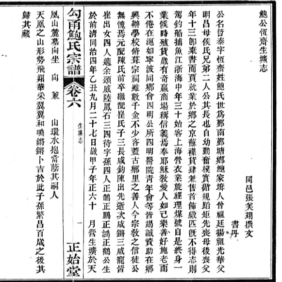

鮑
Surname Bao; also means salted fish
The family surname. An important clan in the Ningbo region.
鮑公恆齋生壙志
"Burial Record of Mr. Bao Hengzhai"
公 is an honorific. 恆齋 (Hengzhai, "Persevering Studio") is his courtesy name (字). 生壙志 indicates this epitaph was prepared during his lifetime.
Document Title
標題
The formal title of this burial record (壙志). A 壙志 is an epitaph or biographical inscription traditionally placed in or near the tomb.